Part to Sheet Metal Options dialog box
- Bend Radius
-
Specifies the bend radius value for the feature you are constructing.
- Use Default Value
-
Uses the default value specified on the Options dialog box.
- Gap
-
Specifies a gap between both faces when you use the Close option to close selected corners or the Overlap option to overlap selected corners. The gap distance cannot be negative and cannot be larger than the material thickness.
- Closed Corner
-
Closes the selected corners.
- Overlapping Corners
-
Overlaps the selected corners.
- Flip
-
Reverses the overlapping of the flanges. This option is only available for overlapping corners.
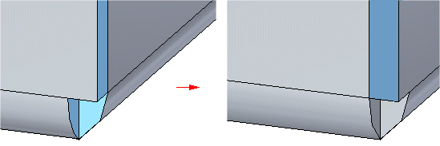
- Overlap Ratio
-
Specifies the percentage for computing the overlap distance. The value you type computes the overlap distance as a percentage of the global material thickness.
Note:The Overlap option creates an entry in the Variable Table that you can edit.
- Treatment
-
Specifies the treatment you want to apply to the bent faces of the flanges. You can apply no treatment,
Treatment type
Example
No treatment
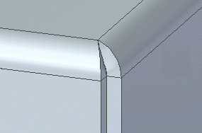
open treatment,
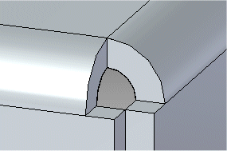
closed treatment
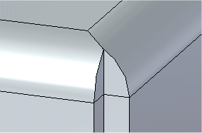
circular cutout treatment
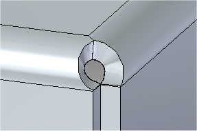
u-shaped treatment
Note:This treatment option is only available when overriding the corner parameter.
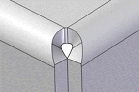
v-shaped treatment
Note:This treatment option is only available when overriding the corner parameter.
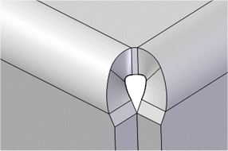
square treatment
Note:This treatment option is only available when overriding the corner parameter.
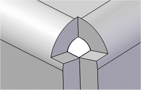
miter treatment
Note:This treatment option is only available when overriding the corner parameter.
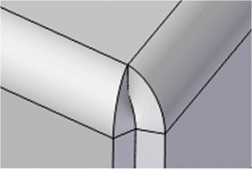
- Diameter
-
Specifies the diameter for the circular cutout, u-shaped cutout, or v-shaped cutout.
- Offset
-
Specifies the offset for the circular cutout, square cutout, u-shaped cutout, or v-shaped cutout.
- Width
-
Specifies the width for the square cutout.
Note:This treatment option is only available when overriding the corner parameter.
- Bend Angle
-
Specifies the angle for the v-shaped cutout.
Note:This treatment option is only available when overriding the corner parameter.
- Square
-
Specifies that the internal corners of the bend relief are to be square.
- Round
-
Specifies that the internal corners of the bend relief are to be round.
- Depth
-
Specifies the depth of the bend relief.
- Width
-
Specifies the width of the bend relief.
- Neutral Factor
-
Specifies the neutral factor for the bend.
- Keep body
-
Retains a design body of the input model.
- Remove internal loops
-
Removes interior loops from the selected faces.
When selected, the interior loops do not appear in the sheet metal part.
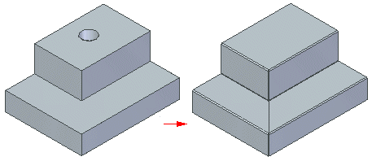
When deselected, the loops from the part model appear in the sheet metal part.
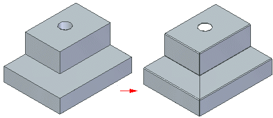
- Show this dialog when the command starts
-
Displays the dialog box when you start the command.
- Reset
-
Resets the values on the dialog box.
- Apply
-
Applies changes specified in the dialog box.
How do I
Convert a part to sheet metalOverride the corner treatment
Override the bend values
Transform a document to a synchronous sheet metal part
Transform a sheet metal part
Rip a corner of a sheet metal part
Learn more
Converting part documents to sheet metalLook up more details
Part to Sheet Metal commandThin Part to Synchronous Sheet Metal command
Thin Part to Synchronous Sheet Metal command bar
Thin Part to Sheet Metal command
Thin Part to Sheet Metal command bar
Thin Part to Sheet Metal Options dialog box
Rip Corner command
Rip Corner command bar